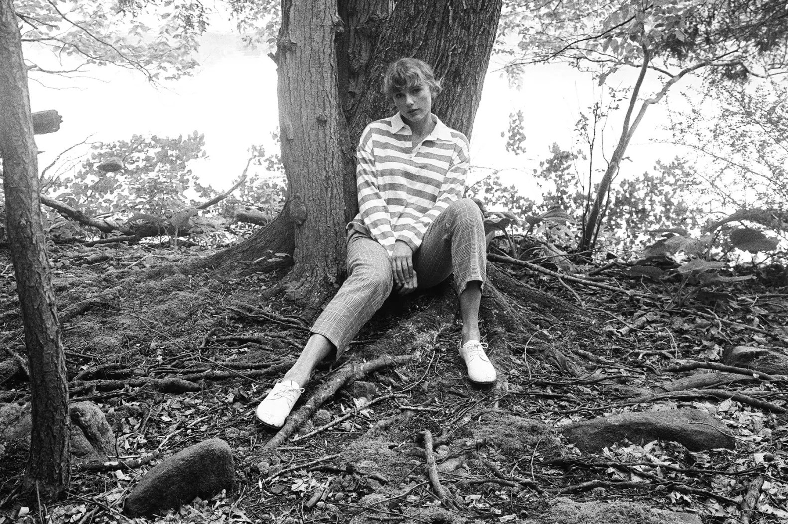
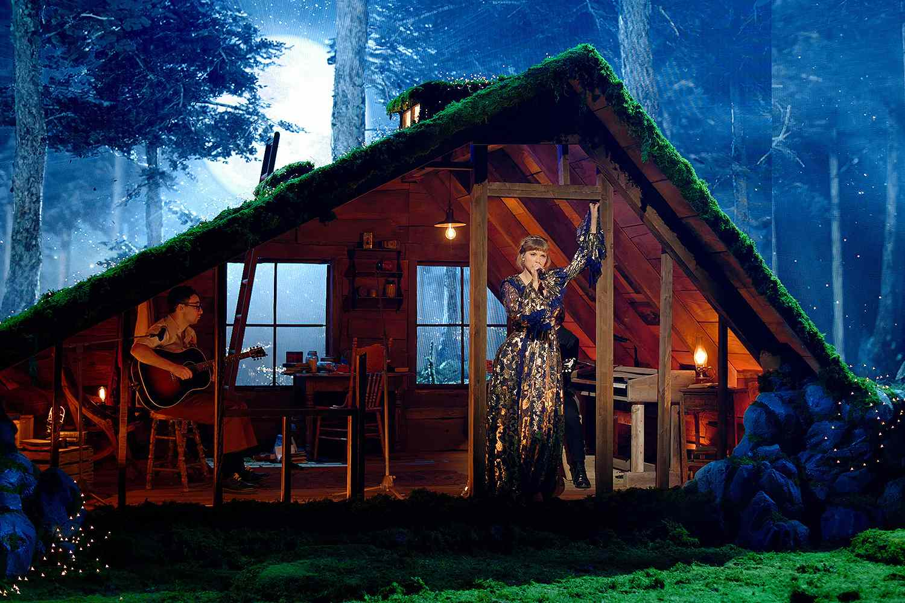

Release Date: July 24, 2020
Singles: Cardigan, Exile, Betty
Genre: Alternative
The release of Folklore during the peak of the Covid-19 pandemic marked another genre change for Taylor Swift. Departing from the mainly upbeat pop production of its predecessors, Folklore consists of mellow ballads driven by piano, guitars, strings, and muted percussions, pursuing indie folk, alternative rock, and electro-acoustic styles.


Influenced by the isolation of quarantine, Swift explores themes of escapism, empathy, nostalgia and romanticism in the album, using a set of characters, fictional narratives, and story arcs, in contrast to the autobiographical tone of her previous projects. The title was inspired by the lasting legacy of folk songs, whereas its visual aesthetic reflects cottagecore. Folklore is Taylor Swift's most critically acclaimed album to date. This album won countless awards including her third Album of the Year award at the 63rd Grammy Awards. The lyricism on Folklore exude a cinematic quality. If you ask both fans or critics what Taylor Swift's best album is, they will most likely say Folklore. Folklore also had the biggest first day on Spotify for a 2020 album.It opened with over 80.6 million global streams on the platform, and earned the Guinness World Record for the most opening-day streams for an album by a female artist.